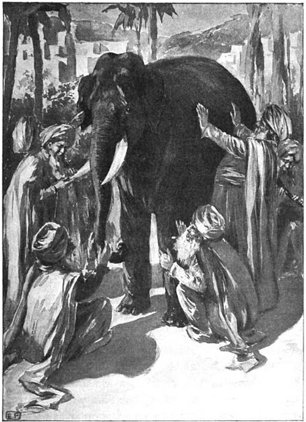

 The parable of the blind men and an elephant is a story of a group of blind men who have never come across an elephant before and who learn and imagine what the elephant is like by touching it. Each blind man feels a different part of the animal's body, but only one part, such as the side or the tusk. They then describe the animal based on their limited experience and their descriptions of the elephant are different from each other. In some versions, they come to suspect that the other person is dishonest and they come to blows. The moral of the parable is that humans have a tendency to claim absolute truth based on their limited, subjective experience as they ignore other people's limited, subjective experiences which may be equally true.[1][2] The parable originated in the ancient Indian subcontinent, from where it has been widely diffused.
The Buddhist text Tittha Sutta, Udāna 6.4, Khuddaka Nikaya,[3] contains one of the earliest versions of the story. The Tittha Sutta is dated to around c. 500 BCE, during the lifetime of the Buddha.[4] Other versions of the parable describes sighted men encountering a large statue on a dark night, or some other large object while blindfolded.
In its various versions, it is a parable that has crossed between many religious traditions and is part of Jain, Hindu and Buddhist texts of 1st millennium CE or before.[5][4] The story also appears in 2nd millennium Sufi and Baháʼí Faith lore. The tale later became well known in Europe, with 19th-century American poet John Godfrey Saxe creating his own version as a poem, with a final verse that explains that the elephant is a metaphor for God, and the various blind men represent religions that disagree on something no one has fully experienced.[6] The story has been published in many books for adults and children, and interpreted in a variety of ways.
There was in this singular caravan a little boy with no father or mother, but only a tiny black kitten to cherish. The plague had not been kind to him, yet had left him this small furry thing to mitigate his sorrow; and when one is very young, one can find great relief in the lively antics of a black kitten. So the boy whom the dark people called Menes smiled more often than he wept as he sat playing with his graceful kitten on the steps of an oddly painted wagon.
The earliest versions of the parable of blind men and the elephant are found in Buddhist, Hindu and Jain texts, as they discuss the limits of perception and the importance of complete context. The parable has several Indian variations, but broadly goes as follows
A group of blind men heard that a strange animal, called an elephant, had been brought to the town, but none of them were aware of its shape and form. Out of curiosity, they said: "We must inspect and know it by touch, of which we are capable". So, they sought it out, and when they found it they groped about it. The first person, whose hand landed on the trunk, said, "This being is like a thick snake". For another one whose hand reached its ear, it seemed like a kind of fan. As for another person, whose hand was upon its leg, said, the elephant is a pillar like a tree-trunk. The blind man who placed his hand upon its side said the elephant, "is a wall". Another who felt its tail, described it as a rope. The last felt its tusk, stating the elephant is that which is hard, smooth and like a spear.
Blind men and an elephant Article Talk Read Edit View history Tools From Wikipedia, the free encyclopedia "The Elephant in the Dark" redirects here. For the 1974 book, see The Elephant in the Dark (book). Blind men and the elephant, 1907 American illustration. Blind Men Appraising an Elephant by Ohara Donshu, Edo Period (early 19th century), Brooklyn Museum The parable of the blind men and an elephant is a story of a group of blind men who have never come across an elephant before and who learn and imagine what the elephant is like by touching it. Each blind man feels a different part of the animal's body, but only one part, such as the side or the tusk. They then describe the animal based on their limited experience and their descriptions of the elephant are different from each other. In some versions, they come to suspect that the other person is dishonest and they come to blows. The moral of the parable is that humans have a tendency to claim absolute truth based on their limited, subjective experience as they ignore other people's limited, subjective experiences which may be equally true.[1][2] The parable originated in the ancient Indian subcontinent, from where it has been widely diffused. The Buddhist text Tittha Sutta, Udāna 6.4, Khuddaka Nikaya,[3] contains one of the earliest versions of the story. The Tittha Sutta is dated to around c. 500 BCE, during the lifetime of the Buddha.[4] Other versions of the parable describes sighted men encountering a large statue on a dark night, or some other large object while blindfolded. In its various versions, it is a parable that has crossed between many religious traditions and is part of Jain, Hindu and Buddhist texts of 1st millennium CE or before.[5][4] The story also appears in 2nd millennium Sufi and Baháʼí Faith lore. The tale later became well known in Europe, with 19th-century American poet John Godfrey Saxe creating his own version as a poem, with a final verse that explains that the elephant is a metaphor for God, and the various blind men represent religions that disagree on something no one has fully experienced.[6] The story has been published in many books for adults and children, and interpreted in a variety of ways. The parable The earliest versions of the parable of blind men and the elephant are found in Buddhist, Hindu and Jain texts, as they discuss the limits of perception and the importance of complete context. The parable has several Indian variations, but broadly goes as follows:[7][2] A group of blind men heard that a strange animal, called an elephant, had been brought to the town, but none of them were aware of its shape and form. Out of curiosity, they said: "We must inspect and know it by touch, of which we are capable". So, they sought it out, and when they found it they groped about it. The first person, whose hand landed on the trunk, said, "This being is like a thick snake". For another one whose hand reached its ear, it seemed like a kind of fan. As for another person, whose hand was upon its leg, said, the elephant is a pillar like a tree-trunk. The blind man who placed his hand upon its side said the elephant, "is a wall". Another who felt its tail, described it as a rope. The last felt its tusk, stating the elephant is that which is hard, smooth and like a spear.
In some versions, the blind men then discover their disagreements, suspect the others to be not telling the truth and come to blows. The stories also differ primarily in how the elephant's body parts are described, how violent the conflict becomes and how (or if) the conflict among the men and their perspectives is resolved.
In some versions, they stop talking, start listening and collaborate to "see" the full elephant. In another, a sighted man enters the parable and describes the entire elephant from various perspectives, the blind men then learn that they were all partially correct and partially wrong. While one's subjective experience is true, it may not be the totality of truth
The parable has been used to illustrate a range of truths and fallacies; broadly, the parable implies that one's subjective experience can be true, but that such experience is inherently limited by its failure to account for other truths or a totality of truth. At various times the parable has provided insight into the relativism, opaqueness or inexpressible nature of truth, the behavior of experts in fields of contradicting theories, the need for deeper understanding, and respect for different perspectives on the same object of observation. In this respect, it provides an easily understood and practical example that illustrates ontologic reasoning.